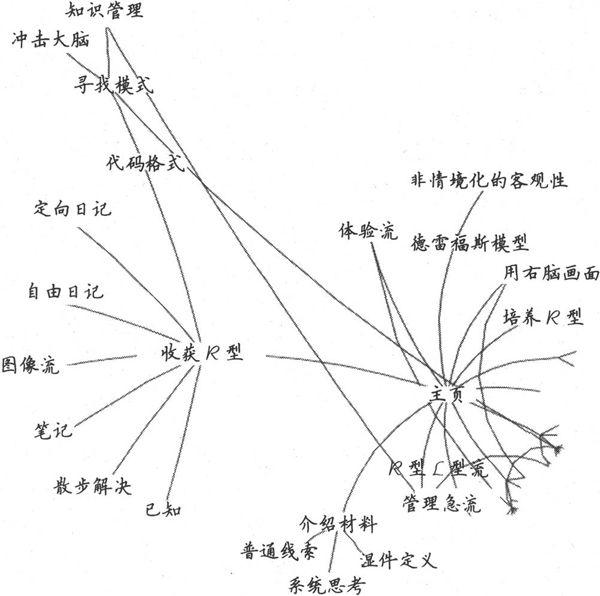
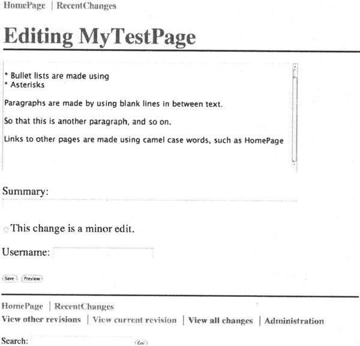
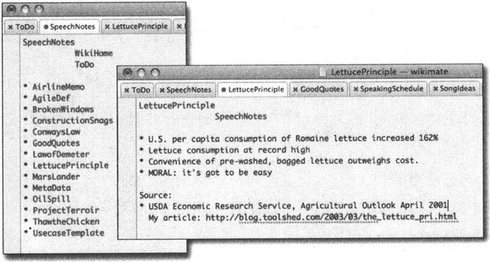
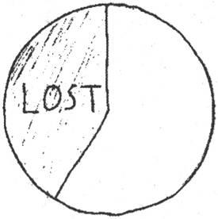
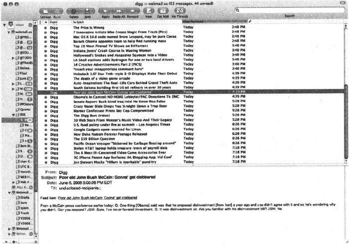
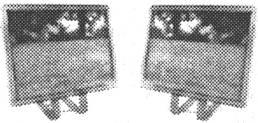
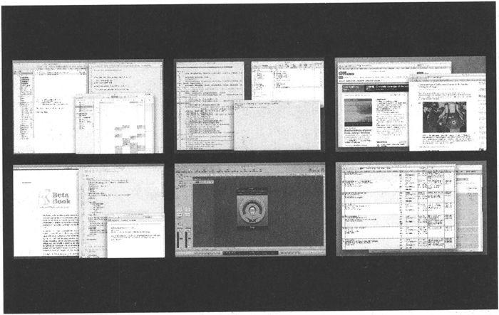

第8章 控制注意力
好问题是没有答案的。它不是一个需要拧紧的螺栓，而是一颗种下的种子，由它可以收获一片思想的绿洲。
——约翰·安东尼·查尔迪（John Anthony Ciardi，1916—1986），
美国诗人和评论家
毫无疑问，我们生活在信息丰富的时代。但往往过犹不及，过多的信息却导致了知识和注意力的匮乏。置身于应接不暇的信息中，很容易失去思考的重心。与其游荡在信息的高速公路中〔1〕，不如主动地管理你的思维。
与第6章中的方法相同，你需要更加主动地管理思维，必须能够将重点放在你所需要的信息上，过滤掉身边大量的无用信息，在恰当的时候获取到恰当的信息。既不会被无关紧要的细节所迷惑，也不会错失任何微妙的线索。
在本书的这部分，我们将沿着以下三点研究如何更好地管理你的思维。
□ 增强注意力
□ 管理你的知识
□ 优化当前情境
注意力表现为关注感兴趣的领域。你可以仅关注相当少的事情，让在此之外的，事件和见解逃脱你的注意。当前情境下许多事情都会争夺你的注意力，有些是值得关注的，而大部分是无关的。我们将会研究增强注意力的方法。
有时候，我们将“信息”和“知识”这两个词互换使用，但实际上它们是不同的事物。信息是在特定情境下的原始数据。例如，微软公司花费了10亿美元收购了一些公司只是一条信息，当今不缺少信息。而知识才揭示了信息的意义。你针对信息花费时间、注意力和技巧，并从中获得了知识。再看微软的收购行动，我们分析得出这将改变市场的格局，将提供更多的机会，并影响其他厂商的知识。我们将会研究一个更好的方式来组织你的深谋远虑。
情境，超出了本书之前的使用范围，它是指你此刻正在关注的事物的集合。比如，你正在调试一个程序，所有的变量、对象关联关系等构成了当前的情境。把它看作某一特定时刻你正处理的信息的“工作组”。
理解这三个互相关联的主题将会帮助你更高效地管理思维。
第一件要做的事就是专心。
8.1 提高注意力
早在2000年我还在做有关实用编程演讲的时候，我听说了一个很奇怪的新闻故事。在宾夕法尼亚州的达比市，一名老妇人走在前往杂货店的路上，一个年轻人跑过来并猛地撞上了这位妇人，然后跑开了。老妇人担心被抢劫，于是很快检查了随身的钱包和贵重物品。虽然受到了惊吓，但她的状态还好，于是继续走向杂货店。
她在店中和几个人交谈，并买了奥利奥饼干和一份报纸，然后离开了。但当她回到家中，她的女儿马上尖叫起来，她看到妈妈的脖子上插着一把牛排餐刀。
太令人惊奇了，人竟然可以在分心的情况下忽视这么严重的事情。在担心被抢劫的情形下，这位老妇人都没有注意到她脖子被刺伤的疼痛。
如果你都可以忽视掉如此明显的事情——比如插在你脖子上的刀——那么想想你身边还会有其他什么事情从你的注意力中逃脱。
注意力短缺
你的注意力是供不应求的。每天有那么多的事情都争相获取你的注意，而你仅仅能关注其中的一部分。
在多处理器系统中有一个众所周知的设计问题：如果不小心，就会导致某个CPU花费所有的运行周期与其他的CPU协调任务，但实际没有做任何工作。同样，人们会很容易毫无意义地分散注意力，结果没有什么事情获得了我们充分的注意，我们也没有做任何有效的事情。
注意大脑的“空闲循环”。
Beware idle-loop chatter.
也不总是外部的事物在争夺你的注意力。例如，在4.2节中我们看到的，L型模式的CPU有一种“空闲循环”程序。如果没有更紧迫的事情值得你去注意，闲置循环将会停留在一些低等级的困扰或不紧急的问题上，如“午饭吃什么”，或重放某个交通意外或争吵。这当然干扰了R型处理，你就又回到了使用半个大脑工作的状态。
你可能常常对自己说：“我很想去做，但我没有时间。”或工作中出现了新任务，而你认为自己只是苦于没有足够的时间来处理它。时间不是真正的问题。正如在前面所指出的（见6.3节），时间是你自己分配的。并不是我们没有时间了，而是我们注意力不够。与其说你没有时间，不如更准确地说你没有带宽。当你的带宽——你的注意力资源——过载时你将会错过某些事情。你无法学习，无法适当地开展工作，你的家人也许会开始认为你得了脑瘤或其他疾病。
如果你注意——真正集中注意力——你就可以完成很了不起的事情。保罗·格拉汉姆（Paul Graham）在他的Hackers and Painters: Big Ideas from the Computer Age〔2〕［Gra04］一书中提到：“一个海军飞行员在夜间以每小时224公里的速度在甲板上着陆一架18吨重的飞机，可能比一个普通少年切下一片硬面包圈更加安全。”
我可以很容易地回忆起当我十几岁的时候，我耐心地站在烤面包机前脑中闪过的念头。这念头与英国松饼、百吉饼、面包、果酱和我面前忙碌的机器都无关。少年的心很容易走神，而且随着年龄增长也不见得有所改善。
另一方面，飞行员是真正特别专注的。在那种情形下，片刻的犹豫不决或错误，将导致壮烈地死去。我们需要培养在没有任何危险的情况下，也能如此集中注意力的能力。
放松的、集中的注意力
下面尝试一件简单的事情。坐下来待一会儿，不要想你昨天犯的错误或担心明天可能出现的问题。着眼于现在，此时此刻的这一瞬间。
没有任何分心。
没有任何自言自语。
我就在这等着。
这并不容易，不是吗？大部分冥想、瑜珈以及类似的练习都是为了这个相同的目标：缓和大脑里L型嘈杂的声音所带来的痛苦，生活在此刻，不要将你的精力不必要地分散，因为内心中喋喋不休的杂事会击倒我们。
《公共科学图书馆一生物学》（Public Library of Science-Biology）〔3〕中发表的一份研究报告显示，冥想的训练可以提高人的注意力。
他们的测试衡量了在同时面对多种虚拟场合、多种刺激下，个体分配认知资源的状态。听起来好像日常在办公室中一样……
得到大量冥想培训的人，胜过只接受了极少培训的人。但最有趣的是，没有人在测试时冥想。正如文章的结论：
“因此结果表明，密集的心理训练可以持久并显著地改善人们在相互竞争的刺激下，对注意力资源的有效分配，甚至人们并没有主动利用他们学到的技术。”
全天候受益。
See benefits 24x7.
换言之，在一天中你可以随时集中注意力，而不只是当你冥思或明确“注意”的时刻。这是一个巨大的收益：就好像通过体育锻炼，能获得更强、更长久的健康。
诀窍39
学习集中注意力。
如果你想在一天中更有效地支配你的“注意力资源”，那么就需要学习一些基本的冥想技巧。
如何冥想
从世俗到宗教，有很多形式的冥想技术。在这里研究一个行之有效的特定形式，它源于佛教传统，但你并不需要是一个佛教徒或做其他任何特别的事就可以有效利用它〔4〕。
力求放松的认知。
Aim for relaxed awareness.
你想要的不是走神或入睡或放松或考虑巨大的奥秘（Great Mystery）或任何类似的事情（对于这些特别活动还有其他形式的冥想）。相反，你想要的是沉浸到一种宽松的思维状态中，在这里你可以意识到自己和你的情境，不用做出任何判断和回应。这就是所谓的内观冥想。那一刻你意识到某些事情，但是没有额外的思考。顺其自然。
在这种风格的冥想里，你需要做的“所有”事情就是注意自己的呼吸。这不像听起来那么容易，但它的确有不需要任何道具或其他特殊设备的优点。以下是具体步骤。
□ 寻找一个安静的地方，摆脱干扰或中断。这个可能是最难的一步。
□ 舒适、清醒地坐着，挺直背。让你的身体放松下来，就像一个玩具娃娃。花点时间感受体内的任何紧张情绪，将其释放。
□ 闭上眼睛，将注意力集中在呼吸——空气进入和离开你身体的这一点上。
□ 注意呼吸节奏，吸气的长短和质量，吸气后屏气的短暂间歇，呼气的质量，呼气后屏气的短暂间歇。不要试图去改变它，只是感受。
□ 将思维集中于呼吸。不要说话。不要描述你的呼吸或其他任何想法。不要与自己交谈。这是另一个困难的部分。
□ 你可能会发现自己在思考一些问题或在与自己交谈。每当你注意力游荡开去，就要抛弃这些想法，轻轻将注意力回到呼吸上。
□ 即使你的思维经常游荡，这个练习能使你发现自己的注意力在游荡，并且每次都能使自己回来，这对你是很有帮助的。
正如4.2节中的绘图练习，你需要停止自言自语。在本例中，请你把注意力明确地放在呼吸上。在绘图练习中，你努力阻止头脑中出现任何词语。在本项练习中，词语可以出现——但你只需将其释放。只要意识到即可，不去思考或作决定。语言、感觉、想法以及其他任何东西来到时，你都不需要理睬它们，让注意力回到呼吸上。
进行这项练习时有一点非常重要：不要睡觉。你需要放松自己的身体和平静你的思维，但是要保持清醒，事实上，你要非常清醒地专注在呼吸上。
经过一段时间的练习后，你可以主动尝试控制自己的呼吸。分段呼吸的方法是，将呼吸看作空气经过三个独立的仓库：
□ 腹部
□ 胸部和胸腔
□ 胸部的最上部和锁骨（但不包括喉咙）
充分将体内气体呼出。在吸气时，首先充满腹部，稍稍地停留，然后充满胸部，最后向上充满至锁骨。保持你的喉咙打开，下颚放松。不要紧张。
短暂停顿，然后正常呼出。
短暂停顿，然后重复上面的动作。
你也可以转换方法，自然吸气，然后以分段方式呼气，或两者都做。在任何情况下，都要保持呼吸的意识，感受空气在你的肺中，并让其他的想法自然溜走。
当然，如果上述任何操纵呼吸的活动让你焦虑、气短或有任何的不舒服，请立即恢复自然呼吸。没有人在对你的表现打分，做适合你的事，不要做得过火。开始先尝试几分钟（比如三分钟）。
许多人在研究冥想的益处。最近〔5〕，研究人员发现，即使是孩子——中学生——也可以受益。学生们参加了为期一年的学习，结果发现他们提高了保持平静警觉状态的能力，改善了有关情商的技能（自我控制、自我反省／意识、灵活的情绪反应），并提高了学习成绩。对于坐着呼吸来说这是个不错的投资回报。
冥想听起来好像没什么意义。但实际上意义重大。我强烈建议你尝试片刻，因为专注是一种重要的技能。
实践单元
□ 定期做冥想。开始时，每天选取几个容易想起的时刻进行三次深度放松的“冥想”呼吸练习，例如，在起床时，在午餐、晚餐时，或参加会议之前。
□ 最好在每天的同一时刻，尝试持续20分钟的冥想练习。你能够开始平静内心的想法了吗？
在阅读下面的章节前尝试做这件事……
你必须立即停止阅读并尝试这件事，否则在阅读时你将会呼吸不适，将不能专注于下一节内容——非常奇怪的内容——有关如何主动地分散注意力。
8.2 通过分散注意力来集中注意力
有些问题的解决需要较少意识的参与。这导致了一个有趣的问题。怎样才算是“起作用”了？
当你将某些东西腌制12小时的时候，你是在“烹饪”吗？当你闲坐着思考问题的时候，你是在“工作”吗？
是的，这就是答案。创造力不是按照考勤钟来运转的，并且在压力下也一般不产生结果。事实上，情况刚好相反：你必须有意识地忘掉问题，让问题在思维中浸泡一会。
不做某些事。
Don't do something.
Doing Nothing: A History of Loafers,Loungers, Slackers, and Bums in America［Lut06］一书的作者汤姆·卢茨（Tom Lutz）说过：“显然，对于许多人来说，创造过程中有大量时间你只是坐着而什么都没做。”但是要澄清一下，这不是指没有做任何事情，指的是没做某些事。
在后工业化社会，这导致了一个问题。这种关键的“思维时间”在大多数企业中一般是得不到批准和报酬的。现在对程序员（或其他知识工作者）有一种普遍的误解，如果你没有在键盘上打字，你就没有在工作〔6〕。
只有在你有一些待处理的数据时，才会把工作转移到无意识状态。你首先需要在头脑中“填满”你知道的事实。
卢茨接着说，每个人都有自己的“浸泡”方式，也就是让他们思想发酵的方法（例如，我喜欢通过修剪草坪的方式）。我们曾谈论R型如何获得运行的机会，但是有一个相关的想法来自意识的“多草稿”模型。
在《意识的解释》（Consciousness Explained）［Den93］一书中，丹尼尔·丹尼特（Daniel Dennett）博士提出了一种有趣的意识模型。在任何特定时刻，你的头脑中包含了事件、想法、计划等多个粗略的草稿。丹尼特将“意识”定义为某一时刻下，头脑中占有最多脑细胞或处理活动的某个草稿。
将多个草稿看作萦绕在头脑中的不同萤火虫云〔7〕。大部分萤火虫都自由地闪烁，荧光形成了云。当几个云同步闪耀时，它们其实相当于接管了大脑片刻，这就是意识。
多草稿形成了意识。
Multiple drafts form consciousness.
假设你的感官注意到了一些新的事件。丹尼特博士说：“一旦大脑的某些局部特定部分观察到了一些事件，该信息内容就不需要再发送给大脑其他主要部分做筛选……这些局部空间短暂的分布式内容选取是有特定时间和特定部位的，但是在它们工作时大脑并没有意识到信息的内容。”
拖延与浸泡
怎么区分你是在浸泡思想还是在拖延、浪费时间呢？
我总是把拖延称为“做纸娃娃”。一个密友（姓名保密）第二天有一门重要的考试，但是前一天晚上，她并不学习，而是坐在沙发上剪纸娃娃。当时这在我看来就是典型的耗费时间：一个无关的非生产性的活动阻碍了你需要做的真正工作。
但也许我错了。也许这不是拖延。这是一个高级触觉练习，也许是她浸泡思想的方法。她通过了测验并以优异成绩毕业。
如果某个任务你真的不想做，那么任何分散注意力的努力都很可能只是耗费时间。如果你仍然有兴趣，但感觉“困难”，那么思想其实是在继续发酵，这当然没问题。
换句话说，认知尚未达到意识的水平。他继续说：“这种内容流，由于它的多样性而像是一篇记叙文；任何时候在大脑中的各个地方都有多个叙事片段的‘草稿’处在不同阶段的编辑状态中。”这种由草稿到草稿的流形成了我们所认为的叙述。
丹尼特的理论是对所谓的笛卡儿剧场（Cartesian Theater）模式的一个非常有趣的替代。在笛卡儿剧场的模式下，假设大脑存在一个意识中心，它指导大脑的活动以及你的行动。这有点像播放意识流的电影屏幕。
但是，事实可能并非如此。多草案的理论支持更分散的处理模型，这更符合目前的研究。没有单一源头或执行监控器来控制这些大脑部位。相反，此刻被共同激活的任意区域形成了你的意识。这使得意识具有一种颠倒、自组织甚至可能突然出现的属性。
让我们再回到浸泡的想法，尽可能去接受它，你需要时间让这多个草案发酵、渗透和发展。其中某一个想法将是“当前式”，并成为意识的内容，但是这并不意味着所有其他草案将被丢弃或被认为是无关的。
你听说过顾问的“三法则”吗〔8〕？一般情况下，如果你不能想出计划可能出错的三种方式，或想出一个问题的三种不同解决方法，那么你的思考还不充分。你可以把“三法则”应用到多草稿模型上，让至少三个可选择的想法来发酵并形成意识。它们已经存在，只需让它们生长和成熟。
是的，这可能仅仅意味着坐着并无所作为。把脚翘在桌子上，一边吃着香脆的点心一边哼唱着小曲。
诀窍40
挤出思维的时间。
那么，现在你该怎么做？正如你需要从R型转换为L型模式来更好地学习，你也需要更加积极地处理知识。
实践单元
□ 你最喜欢的浸泡思想方式是什么？你尝试过别的吗？
□ 你曾批评过别人在思考浸泡上花时间吗？你现在会有所改变吗？
□ 你有没有因为浸泡思想而被批评？下一次再发生这种情况时，你将如何应对？
8.3 管理知识
现在是时候来处理你的想法、见解、原始信息和知识，并把这些混乱的东西变成一些卓越的东西了。
但是这一次，你所需要的不是你的大脑。你需要增强你的处理能力。
这些主题都是什么？它们为什么写出来这么有趣？让我来解释一下……

开发外部信息处理系统
正如我在3.2节所说的，你需要随时随地做好准备捕捉信息。但是，一旦你捕捉到它，不能只让它呆在那里，这对你没有任何用处。你需要处理这些材料：组织它，发展它，合并不同的材料，并将整体的想法提炼和划分为更具体的想法。
你需要一个地方来存放想法，在这里你可以更有效地利用它们。基于现代科技，我建议你使用某种超链接性质的信息空间，可以很容易进行自我组织和重构。但在深入细节之前，让我解释一下为什么这是如此重要。
大脑之外的思维支持工具会成为你思维头脑的一部分。
External support is part of your mind.
这不是一种单纯的文书活动。据有关分布式认知的研究表明，大脑之外的思维支持工具会成为你思维头脑的一部分。不但大脑本身很神奇，我们还可以通过提供一些关键的外部支持为它增压。
美国前总统托马斯·杰斐逊一生拥有过大约1万本书〔9〕，是一个书迷，这些书的主题丰富多彩，从政治哲学到音乐、农业及葡萄酒酿造。每本书都成为他意识的一小部分，但可能并不是整本书，因为我们绝大多数人都没有百科全书般的记忆力。一旦你读过一次，记得去什么地方找到对应的细节就足够了。
爱因斯坦也深谙此道。据称他曾被问到一英里有多少英尺，他回答说，他不会在头脑中填满能轻易找到的东西。这就是参考书籍的用处，这是一种有效使用资源的方式。
你自己的藏书，你的笔记，甚至是你喜爱的IDE和编程语言都构成了外部信息处理系统的一部分，它是在你实际大脑之外的思维内存或处理组件。作为程序员和知识工作者，我们可能比大多数人更依赖于计算机去建立更多的外部信息系统。当然，并非所有基于计算机的工具都合适。
对于浸泡、分类和发展想法，我发现一种最有效的工具就是个人的wiki。事实上，正如我们将看到的，通过wiki组织你的伟大想法，你会得到更多的伟大想法。
使用wiki
传统的wiki（Wiki-Wiki-Web的简写）是一种网站，它允许任何人使用普通的网络浏览器编辑每个网页。在每一页面的底部都有一个链接标示“编辑此页”（Edit This Page），如图8-1所示。
图8-1 显示wiki页
点击那个链接，网页内容就会出现在一个HTML文本编辑界面中。然后，你可以编辑网页，并点击“保存”按钮，你更改的部分就出现在该网页上。Wiki标记通常比原始HTML简单。例如，你可以使用*字符创建一个列表项、带下划线的斜体，及诸如此类的属性，如图8-2所示。最重要的是，能够链接到其他网页去。

图8-2 编辑wiki页
首先通过使用WikiWord创建一个新网页的链接。一个WiKiWord是由两个或两个以上单词组成（单词首字母大写，中间无空格）的。一旦你将一个WikiWord放置在网页上，就会自动关联到对应名字的wiki页面上。如果该网页尚不存在，那么在第一次点击时，你会看到一个空白页，并有机会来填写它，这使得创建新页面非常容易和顺手。
将wiki作为基于文本的思维导图来使用。
Use a wiki as a text-based mind map.
但传统的wiki是基于Web的，而且把编辑模式和显示模式分开了。无论出于何种原因，如果你需要wiki是一个基于Web的应用程序，那么这是一个不错的主意。但是对于本节的内容来说，你可能需要在技术上稍加改变。
你可以使用采用自己喜欢的编辑器来实现的wiki——一种wiki编辑模式。这使你的编辑器环境中有WikiWord超文本链接和语法着色或高亮显示。我曾经在vi、XEmacs和TextMate中使用过这种功能，效果良好。wiki感觉就像一个文本的思维导图（讲到这里，你很可能会使用思维导图帮助明确和增强wiki的章节）。
我最成功的wiki实验是搭建一个PDA作为与电脑同步的wiki。我使用的是夏普Zaurus系列，一种袖珍PDA（拇指键盘，运行Linux操作系统）。我安装了vi编辑器，写了一些宏，使它可以实现超链接遍历和语法高亮等。然后，我可以使用源代码版本控制工具CVs同步wiki的文件。
其结果是，这种便携式的口袋wiki可以进行版本控制并与我的台式机和笔记本电脑同步。无论在哪，我都随身携带wiki。我可以建立和增添记录，写文章或写书（包括本书），等等。
而写这本书时，我逐渐从Zaurus转移到iPod Touch，它使我拥有了一个定制的基于Ruby的Web服务器，提供了一种更传统的、使用同步wiki数据库的、基于Web的wiki。
你可能想要在你的笔记本电脑或PDA上做同样的事情，使你在办公室以外也可以处理wiki。目前有许多可供选择的wiki应用。可登录http://en.wikipedia.org/wiki/Personal_Wiki查看最新的列表。
诀窍41
使用wiki来管理信息和知识。
这一做法的真正妙处在于，一旦有地方存储一些具体的信息，你就会注意到新的相关数据会突然从某处冒出来。这个现象类似于感官调整。例如，如果我告诉你在派对上寻找红色的东西，你会突然发现红色无处不在。同样的事情也会在新机型的车上发生。你调整了注意力，因而在你之前没有关注的地方，突然间，要寻找的事物就会出现在你面前。
利用感观调整收集更多想法。
Use sense tuning to collect more thoughts.
有了wiki，当你有一个随意的想法后，可以把它写下来放在你的主页上，因为这时你不知道还能对它做些什么。一段时间以后，你有了第二个相关的想法，而现在你可以将这两个想法放在一起，存储在新的一页中。现在突然更多的相关想法出现了，因为你有一个地方来存放它，而你的思维也会非常乐意帮忙。
一旦你有了地方来存放某类想法，你就会得到更多这类想法。无论是wiki还是在纸上写的日志，也无论是便签还是鞋盒，对于特定主题领域或项目的相关想法，有一个地方来存放它们就是外部信息系统的主要优点。
例如，看看图8-3所示的屏幕截图。这个显示了我个人的wiki格式，网页的标题出现在每个页面的上方，然后是一些指向到其他wiki页面（如待办事项）的链接。WikiWord链接到相同名称的网页，以蓝色高亮显示，和通常的网页网址一样。

图8-3 wiki笔记
当我第一次找到一个关于食用莴苣的巧妙方法后，就建立了名为LettucePrinciple的网页。我听到一则有关妙语“解冻鸡”的笑话，我认为可能有用，所以将它记录在Thaw The Chicken中。然后，美国宇航局由于数量单位不匹配的编程错误损失了价值1亿2千5百万美元的卫星，所以我在MarsLander中将这件事记录下来。
既然我有了这么多漂浮不定的想法，我就建了一个名为SpeechNotes的列表，作为演讲素材的积累。我放上了ConwaysLaw、LawofDemeter、OilSpill和其他已经使用过的材料，还有一些新的想法，例如ProjectTerroir。现在LettucePrinciple有了归宿，有了放置类似主题的地方，所以我把它加到了列表里。我曾经在RubyConf做的一个有关技术改造的演讲中和博客中引用过它〔10〕。
列表增长到几百项，这并不好。我开始整理wiki并清理东西了。我制定了不同的清单，如博客帖子、即将举行的演讲、基本的故事和研究，等等。一篇文章可能参考六七篇网页，一本书的大纲可能引用20多个。但是wiki的好处不仅仅在于这样的组织性。
将一些笔记从原来的形式抄写到wiki中（或整理到同一个wiki上），这有助于大脑吸收这些资料。就如同抄写会议或课堂上的笔记，这样做提供了第二次深入接触材料的机会，并能使大脑神经更强烈地感受这些信息。
你越是接触它，越可能会发现原来你没有注意到的材料间的关系和模型。再次，你可以对一些较有意思的信息重构思维导图，以获得更深入的理解，并将其写回wiki。
你会更积极地寻找模式。
但你需要保持对当前工作的注意力，不分心。在下一节中，我们将看到原因。
8.4 优化当前情境
情境，我们在这里指的意思是，加载到你的短期记忆里的有关你手头工作的信息集合。用计算机术语说，就是换到内存里的正在使用的页面集合。
计算机都有一种超越我们思维结构的独特优势，它们能轻松自然地交换情境。
我们的大脑不具有这样的能力。如果有事物中断我们，打破我们的工作流，或导致我们分散了注意力，那将一切思路恢复到原状是相当昂贵的。我们把“将一切思路恢复到原状”称为情境切换。我们要看看为什么你需要不惜一切代价避免这种切换，以及如何避免分心并较好地管理中断。
情境切换
你有多少可支配的注意力〔11〕？也就是说，当前有多少事情需要你的注意，在任何特定的时间点上你总共可以关注多少东西？该比率是相当令人伤心的。
你并不能像你想象的那样支配太多的注意力。
我们不能同时关注太多不同的东西，因为当你的注意力从一个事物转移到另一事物上时，你需要切换情境。不幸的是，我们的大脑硬件无法很好地支持情境切换。
多任务处理对生产力会造成重大损失。一项研究〔12〕发现，一般情况下，多任务处理将耗费你百分之二十至四十的生产力。这样，会将你的8小时工作日削减到5个小时。其他的研究表明，这一数字能高达百分之五十，并伴随错误的大量增加。

澄清一下，多任务处理在这里是指在不同的抽象层次上执行多个并发任务。而在同一代码区域修正几个错误不能算作多任务处理，回几个类似的电话或做多道菜也不算。当你中断代码修正而去回应无关的即时消息、电子邮件或电话时，或者快速浏览新闻网站时，你才会遇到麻烦。
需要平均20分钟返回到原来的工作状态。
It takes twenty minutes to reload context.
与电脑不同，我们的大脑没有“保存栈”或“重新加载栈”的操作。相反，你不得不逐一地把一切记忆拖回来。这意味着，如果你深入进行了一项任务（如调试），然后被中断，那么可能需要平均20分钟返回到原来的工作状态。二十分钟，考虑一下你在一天中可能会遇到多少次打断，如果每次打断都需要二十分钟时间恢复，你一天中的相当一部分时间就都白白浪费了。这就是为什么程序员一般讨厌被中断，特别是被非程序员打断。
电子邮件的组织问题
你可能已经遇到有关电子邮件的这种问题：如果你在不同的文件夹中保存各类主题的邮件，那么当有一封邮件跨越多个主题时，你将如何处理？使用分散的主题来存储，这在一段时间后就开始失效，将不再有用。在wiki中，你可以通过交叉链接的主题解决这个问题——它没有严格的层次结构。但是对于电子邮件，通常你只能把邮件放在一个单独的文件夹中。
相反，不将邮件保存在文件夹中似乎更好。只保留一些大的存档（按年份或者按月），并依靠一些搜索技术来找到你所需要的邮件。
如果你的电子邮件客户端支持的话，你可以使用虚拟邮箱。基于你设置的搜索标准来创建虚拟的邮箱。一封邮件可能会出现在多个虚拟邮箱中，这可以帮助你在需要时找到它。
或者，你也可以使用本地的搜索引擎。例如Mac上的Spotlight或谷歌桌面。
在当今的数字文化中，这属于被称为认知超载的一种更大的、非常危险的现象。多种压力的混合，太多的多任务处理，太多分心的事，而且经常有大量新的数据待处理。科学家认为，试图把注意力同时放在几件事情上，意味着你在每件事情上都会处理得很差〔13〕。
如果这还不够糟糕，看看英国的一项有争议的研究：如果你持续中断正在进行的任务，去检查电子邮件或者回复即时消息，你的有效智商会下降10分。
相比之下，吸大麻烟卷导致下降的智商仅4分（见图8-4）。
无论你做什么，请不要同时都做。
图8-4 相应的智商损失
这使我怀疑，各家公司是否应该少关注强制性毒品检测而重视强制性的电子邮件习惯测试〔14〕。当然不只是电子邮件和毒品，司机打手机时，也不能对路面的危险作出迅速反应。电视新闻频道中充斥着不同的新闻报道，包括主屏幕、角落的小视频窗口、多个滚动显示头条新闻以及起到分割作用的商业广告。从认知科学的角度来看，这对观众绝对是一种酷刑。
鉴于我们同时处理多个事情时表现如此糟糕，并且很容易被大量其他的事情打扰，让我们来看看如何避免一些常见的干扰并坚持完成同一个任务。
避免分心
在NPR（美国国家广播电台）的All Things Considered节目的一个片段中，Paul Ford称赞了简洁的用户界面带来的益处〔15〕。回想一下早期基于文本的操作系统（CP/M、MS-DOS等）上运行的早期文档处理工具WordStar或者WordPerfect。那时没有窗口，没有鼠标，没有电子邮件，没有游戏。工作环境是如此地乏味，但结果是鼓舞人心的。或更确切地说，这种工作环境可以帮助你保持对当前工作的注意力。
我最喜欢的便携式写作工具之一，就是我的夏普Zaurus。在它的生命即将走到尽头时，我去掉了它里面所有的东西，只剩vi编辑器。我卸掉了无线网卡，仅使用CF存储卡同步。此时的设备使我很少分心。事实上除了写作没有别的功能。没有游戏，没有电子邮件，没有网络——只有你写作的章节和文字。这是很艰苦的，但很有效。
主动切换
一个有助于应对这种情况的做法是更主动地进行情境切换（请注意是“主动地”）。不是简单地忽略即时消息或电子邮件，而是使它成为一个主动行为。关闭你正在做的工作。做几个深呼吸（我们一会将谈论更多呼吸的重要性和收发电子邮件的技巧）。对这项新活动提起好奇心和兴趣，全神贯注地处理它。
在功能更全的系统中，你可以运行一个专门的应用程序来隐藏目前使用的程序之外的所有程序。例如，在Mac上可以使用Think!〔16〕屏蔽焦点以外的所有程序，或者是Desk Topple〔17〕，它可以隐藏你的桌面图标，替换你的墙纸，并定时自动隐藏应用程序的窗口。
单任务界面
在Mac OS X中，你可以使用QuickSilver工具来设置一些基于按键的快捷命令。它使我想起在那些早期系统中存在的终止-驻留式程序SideKick。
例如，我做了一些定制，只需几个按键我就可以给地址簿中的人发送一个一句话邮件。表面上看来，这似乎没什么大不了的。但是，能够不访问邮箱就发送电子邮件是一个巨大的优势。
比如你正在处理某项工作，突然想到必须要发送一封电子邮件给某人。也许你正在调试程序，并且意识到将会在午餐约会中迟到。你按下几个键，发送邮件，然后再回到调试。
现在将这件事与通常的经历作一下比较。
你正在调试，并且意识到必须发送一封电子邮件。你的情境切换到邮件处理程序上，把它打开，开始发送邮件，同时发现了收件箱中多了几封新邮件，这时干扰就出现了。你将会很快被新的邮件吸引，并失去了调试的思路。情境破坏了。
同样，我配置了QuickSilver，只需几个按键就可以在我的待办事项清单中添加一行。否则，你会面对与发送电子邮件同样的风险。你必须把情境切换到待办事项清单，一旦输入新条目，就会看到所有其他需要做的事情，并再次分心。
你可以在Linux下做同样的事情，通过打开一个小终端窗口，利用shell脚本添加到待办事项清单中。
当你有一个想法时，最好把它放在适合的地方，无论是待办事项清单还是电子邮件，然后回到你正在做的事情上。
有效地组织和处理任务
既然是在谈论如何规范注意力接口和工作习惯，我们不得不讨论一下GTD。
大卫·艾伦（David Allen）的《尽管去做：无压力工作的艺术》（Getting Things Done: The Art of Stress-Free Productivity）［A1102］，简称GTD，是一个非常受欢迎的图书／方法／信仰，旨在帮助你组织、排序并有效地完成工作。
他提供了一种方法论和大量的技巧和窍门（以前谁知道标签会如此地有趣呢），来帮助你更有效地处理工作。
从我们谈论的角度看，艾伦提出了三个要点。前两点都与处理电子邮件或其他类似收件箱有关，最后是一个更通用的要点。
1．仅扫描输入队列一次 不管你正处理的输入队列是什么，无论是在电子邮件收件箱中，还是在语音邮件或文件的收件箱中，都不要使用送达箱作为存储设备。检查邮件并对新邮件作必要的分类，但不要总是重新查看已存在队列中的邮件。如果某些邮件可以在两分钟内搞定，那就处理它，或者可能的话完全把它转交给别人做（又名委托）。不断地回顾相同的1000封邮件，并处理其中最不重要的20封，只会浪费你的时间和精力。
2．顺序地处理每组工作 一旦你选择一组工作，就要持续进行，避免情境切换。正如我们前面看到的，切换到另一个工作将破坏你的精神堆栈，当你返回到之前的工作时会损失更多的时间。我们程序员极易被小事情干扰。坚持做你正处理的工作。
3．不要在头脑中保留清单 艾伦提出另一个重要方面——维护外部信息处理系统。动态刷新头脑中的清单是相当昂贵的。相反，应该在外部信息系统中保持待办事项清单，例如，在记事贴上、在wiki中、在日历上或专门的工作清单工具中，或在其他类似的东西中。
GTD方法有很多的拥护者，如果有效地优化排序和组织任务正是你的烦恼所在，那么GTD可能很有帮助。
8.5 积极地管理干扰
然而，即使是最有条理的待办事项清单和每日计划，也都无法避免被干扰。每个人都会受到干扰，但如今我们受到的干扰比以往任何时候都多。
网络提供了各种各样的干扰。一切，从日常的垃圾邮件到YouTube上如何制作造雪机的视频、网站上有关选举舞弊和政治欺骗的讨论（如图8-5所示）、最亲密朋友发来的即时消息、Wikipedia上的新文章——所有的一切都在那里吸引和分散你的注意力。

图8-5 若干类似消息的迷宫
下面是一些建议，帮助你减少来自你的团队、你的通信渠道以及你自己的干扰。
制定项目交流规则
什么时候比较合适回绝你的同事问你问题、请求你帮助追踪程序错误或要求一次临时的代码审查？他们什么时候可以打断你？你的经理有紧急事件找你该怎么办？
这些都是正当的问题，最好的管理方式是在项目开始之前准备好答案。规定一天里不能被打扰的工作时间段。设定其他时间段，用于交流、每日的站立会议〔18〕，以及各种各样意想不到的事情。
没有常胜将军
不是每天都是富有成效的一天。如果事件变得混乱，接受事实并意识到你不会进入最佳状态，这样可能会更有效。首先处理紧息状况，然后在办公室享受比萨饼，并期望有一个更美好的明天。
也许你在每天早晨或傍晚是最清醒的。不管怎样，至少你在一天中的某段时间里是最有效率的。我在团队里听说有人曾搞了“无邮件下午”或“无邮件日”，没有电子邮件，没有电话，没有打扰。开发人员称其为一周里最有效率的、最快乐的时间。
诀窍42
制定交流规则来管理干扰。
因此，在项目的早期为你的团队建立交互规则（实际上是打断的规则）。
放缓电子邮件
但并非每个人都遵守规则。你附近的同事将遵守你设定的规则，可是外地办公室里的同事呢？还有其他所有你要打交道的人呢——来自其他公司的人、客户，以及茫茫人海中那些在电子邮件、即时消息或电话另一端的人？
你不能让整个世界都依照你自己的时间表来运转。
或者你真能做到？
小心邮件造成呼吸暂停
在2008年2月，Linda Stone创造了“电子邮件暂停呼吸”（email apnea）这个词语。一天早晨，她发现，“我打开我的电子邮件，并没有什么不寻常的，就是每日常见的大量时间表、项目、出差、信息和垃圾邮件。然后我发现……我没有了呼吸。”
电子邮件暂停呼吸：在处理电子邮件时，呼吸短暂中止或变得很微弱*。
浅呼吸，或完全摒住呼吸，不仅仅是不舒服，如果不能正常有力地呼吸，那么可能严重损害你的健康。糟糕的呼吸会引起与压力有关的疾病，引起部分紧张反应，阻碍葡萄糖进入你的血液，并有许多其他不幸的后果。
这些来自邮件的预期压力是否会影响你的呼吸？当一个程序崩溃或跟踪调试时呢？或任何其他电脑的常见状况发生时呢？
如果你发现这些会影响呼吸，每次发生时休息一下，做个深呼吸。
你在处理电子邮件方面比自己想象的更有控制力，这取决于你查看和回复电子邮件的频率。下面是一些尝试：在一天中限定具体的、预定的时间来处理电子邮件——但可能不是每天的第一件事。设定一个时间，查看并对电子邮件排序，并且设定它的时间。在设定时间后进入真正的工作。这可能是一个很难遵守的纪律，但我有一些诀窍可以帮助你。
第一步，设置你的电子邮件通知。提示邮件的图标是不可抵抗的，它吸引你去点击。反反复复的“你有封信”的提示音也是如此。如果可以的话，把它们全部关闭。最低限度，只对重要的信息播放声音，比如来自你的家人或老板的邮件。
第二步，加大检查邮件的间隔。不要每分钟都检查邮件，或者就像实验室老鼠一样坐在那里不断点击收取邮件的按钮，以获取食物奖励〔19〕。
下一步，请注意设定期望的答复速度和电子邮件的数量。请记住这个电子邮件的黄金规则：
诀窍43
少发送邮件，你就会少收到邮件。
除此之外，请记住你掌控着节奏，你可以控制整个进度。
诀窍44
为邮件通信选择你自己的进度。
你对电子邮件回复的速度设定了交流的进度。这就是说，你答复得越快，未来别人对你的答复期望也越高。发送的邮件越少，频率越低，你就把疯狂的速度下降至一个较为合理的水平。
最后，最好的建议是对电子邮件眼不见心不烦。在不使用时退出电子邮件客户端。
情境友好的休息
你一直在持续努力地工作，你觉得越来越困难，或烦恼，或只是需要休息一下。你有几个选择。
你可以远离电脑，在一张空白纸上随手涂鸦。不过这是一种低层次的分心。你可以去散步，只要你没有遇到任何人，不会再开始交流，然后就随意地走走，保持对情境友好的状态。
或者你可以看看CNN、Digg或Slashdot等网站的首页上有什么新闻。这是一个明显的分心。或者更糟的是，你可以检查电子邮件。现在我可以保证你已经失去了工作的思路，如果今天你还有机会回到工作中的话，至少要花费二十到三十分钟的恢复时间，期间也没有生产效力。
提高进出情境的成本。
Make the cost obvious.
保持情境的一个办法是提高进出情境的物理成本，有助于提醒你隐藏的精神成本。例如，如果你可以很轻易地打开和关闭笔记本电脑，那么你将不断地进出情境。但是，如果离开你的环境然后再回来时感到痛苦，也许你会少受诱惑。
我的办公室就设定成这样，有很多灯的开关，我到处走，并打开这些开关。我在工作时会花几分钟挑选一些有趣的音乐听。投入了体力，设置好一切，并让自己适应后，我不太可能为一些突发奇想跳起来，把一切关闭，离开，再回来，重复做这一切。一旦我设置好，我会持续工作一段时间。
笔记本电脑以同样的方式工作，如果我只是使用电池打开它几分钟，我可能不会长期呆在那里。如果我用上电源线、笔记本电脑冷却垫，等等，我已经作出了更多的投入。当然这不是很多，但它确实有助于提醒我进入和退出情境的成本。
启用可屏蔽中断
在CPU的概念中，中断有两种：可屏蔽的和不可屏蔽的。可屏蔽的中断可以被忽略。这种分类正是我们要模仿的。
诀窍45
屏蔽中断来保持注意力。
手机配有语音信箱和免打扰（DND）的按钮也是这个原因。自从1935年起，人们就可以让电话转给语音信箱（或答录机），这当然是出于善意。
即时消息遵循同样的道理——如果繁忙就不做回答。当你准备好时再给他们回电话，这样你就不会失去你辛辛苦苦搭建好的所有情境。
调试代码的时候，在你的办公隔间上贴上标签，或者关上门（如果有的话）。
保存情境堆栈
如果你认为将要被打扰时，可以做的最好事情就是为被打断做准备。科学领域对任务中断和恢复的研究中有许多有趣的地方。这里存在两个有趣的时间段：中断间隔和恢复间隔。
为打断做好准备。
Prepare to be interrupted.
一旦你开始做一项任务，你就会持续下去直到被打断。这是提醒你需要马上开始另一个任务。在提醒和下个任务开始之间的时间就是打断间隔。现在你开始做新任务，一段时间之后切换到最初的任务上。你恢复之前速度所花费的时间就是恢复间隔。
当提醒首次出现时，你知道自己被打断了。在打断起效之前，在你接电话或者回应门外的人之前，你有宝贵的几秒钟时间。在这段时间里，你需要为自己留下一些“面包屑”。也就是说，你要留下线索，以便在你返回这项任务时能够继续前进。
例如，假设我在写一封电子邮件或者文章，正表达某些想法时，被打断了。我很快写下几个单词——不是完整的句子——只是提醒我自己当前的想法。这似乎很有用，关于这种线索准备的主题已经有很多研究成果了〔20〕。
此外，如果你认为可能在任何时刻被打断，那么你可以开始养成一种经常为自己留下小线索的习惯。
8.6 保持足够大的情境
在情境中保持的信息越多越好。就我个人而言，我会在办公桌上下堆满了东西。我称之为情境，清洁人员称之为“垃圾”。
但是“眼不见”通常意味着“发狂”。我希望我工作相关的东西触手可得——在我的思维工作集里，在桌子上，我的东西一目了然。
让你的生产力提升20％～30％。
Get an instant productivity gain of 20 to 30 percent.
事实上，保持情境中任务相关的东西很有益处。不论你如何衡量生产力，仅仅多使用一台显示器就可以让你的生产力提升20％～30％〔21〕。
这是为什么？
适合你的不是桌面隐喻，而是Frederick Brooks在几年前描述的拥挤的飞机座位隐喻。在一个大桌面上，你可以展开你的工作，看到你在做什么——同时看到所有的。在拥挤的飞机座位上，你没有足够的空间同时看两份以上的文档（或者文档的一部分）。你必须来回地切换文档。
我敢打赌，让你去Staples或者Office Depot等办公用品店寻找一张17英寸的办公桌，你找不到，因为这个尺寸实在是太小了。然而，大多数显示器都是17到21英寸。这点空间就是我们办公的地方。你不得不在活动窗口和应用程序之间切换，因为你无法在如此小的空间里保持足够的情境。
你知道Alt-Tab组合键（Mac上的Command-Tab）称为什么吗？情境切换。正如我们看到的，情景切换扼杀生产力。即使是类似使用Alt-Tab切换不同窗口的小动作也会花费时间、短期记忆力和精力。
任务与主题
想一想你写的应用程序。你是按照任务还是按照主题来组织用户界面和组织结构的？如果你按照任务重新组织用户界面会怎么样？你的用户会非常高兴吗？

有很多任务我可以在笔记本上完成，但是还有一些任务需要使用两台23英寸的显示器。两台显示器必须是同样型号和品牌的，你不希望因为重新定位到较小的显示器或者适应不同的色差而分心。
诀窍46
使用多台显示器来避免情境切换。
保持任务注意力
人们在有了更多显示器之后，很容易就会打开无数的应用程序，最终又一次迷失在混乱中。
在最先进的操作系统上你可以使用虚拟桌面切换器，允许你拥有很多不同的屏幕，你可以使用特殊键随意切换。每一个屏幕都是独立的，称为工作空间。秘诀在于你如何在工作空间中分配应用。
使用虚拟桌面。
Use virtual desktops.
起初，我通过应用程序组织工作空间：所有的浏览器窗口在一个空间中，所有终端窗口在另一空间中，等等。当我意识到这种分配方式造成了比以往更多的切换时，我于是根据任务重新组织。
下面这个例子介绍的是我通常如何安排工作空间的（见图8-6）。

图8-6 MAC OS X 工作空间
通信 将这个工作空间用于所有的通信、日程规划或者计划相关的任务，包括下面这些窗口。因为已经包含了最具破坏性的程序，我努力不把这些放到其他空间里。
□ 电子邮件
□ 待办事项清单
□ 聊天
□ 日历
□ 项目状态表——当前的人员状态、订单生产日程，等等。
写作 当我写作时，我不想被电子邮件等打扰，所以我在这个空间只放置写作工具。
□ 编辑器
□ 词典
□ 图编辑器
□ Acrobat Reader（用于校对）
编程 想法和写作一样，只是工具不同。该空间通常有很多终端窗口，只是长宽比不同：
□ 正常比例的
□ 高度正常，宽度大的
□ 宽度正常，高度大的
保持这些窗口开着会节省时间，当你需要时，随手可得。本工作空间的内容因你使用的编程语言和环境而不同，但是你起码得有代码编辑器或者集成开发环境，也许还有单元测试图像化界面、针对不同应用或者相关文档的不同浏览器窗口、终端窗口显示日志、make或者ant过程，等等。
上网 我有一个工作空间用于上网（或称之为“研究”），包括所有辅助程序。
□ 浏览器窗口
□ Acrobat、QuickTime、RealPlayer等。
音乐 当然，我们的生活不全是工作。在你写代码、回信的时候需要一些音乐。
音乐控制应该是透明的，当电话铃响起或者有人进来时，你需要立即调节音量，按下播放／暂停，等等。一些键盘现在具有内建的音乐控制，或者你可以设置热键。
有时我使用外部控制装置（专门的按钮替代了Ctrl-Alt-Shift-Meta-F13，简直是太方便了）来暂停。你也可以使用MacBook遥控器。
这里也是存放我所有音乐爱好程序的地方。这样的话，它们不会直接出现在我的面前引诱我不工作，但是我一旦有空闲时间就会享受音乐。如果你喜欢游戏，那么这里就是你存放游戏的地方。
诀窍47
优化你的个人工作流以最大化情境。
8.7 如何保持注意力
在本章中，我们围绕如何集中注意力研究了很多问题。我鼓励你把冥想作为保持思维敏锐和清晰的工具，我们讨论了外部信息处理系统的优点，警示了分心的危害。
那么，如何才能保持注意力集中？最重要的是自我意识——记住你需要集中注意力做什么。我们大脑的默认设置不利于编程和知识型工作。
如果没有别的了，记住下面三件事情。
1．学会安抚喋喋不休的L型思维。
2．主动在前进中思考和增强思想，即使是不成熟的。
3．明确情境切换的昂贵代价，尽可能地避免。
如果你开始尝试解决这些领域的问题，就会逐渐善于管理自己的活动中心，并控制自己的注意力。
实践单元
□ 想一想日常让你分心的事情。有没有办法组织一下，从而无需额外的分心就可以搞定它们？
□ 想清楚你何时编码最有效率，在那段时间要减少分心的事情。
□ 跟踪“拖延”与“思考”时间，不要混淆。
□ 你有多容易被拉走或者主动拉走自己——从工作中？为了更易于集中注意力，你能使自己难以被拉走吗？
□ 观察团队里的专家，看看他们是如何避免分心的。
注 释
〔1〕 我想到了过去的视频游戏“青蛙”，结果同样混乱。
〔2〕 此书中文版即将由人民邮电出版社出版，译者阮一峰。——编者注
〔3〕 参见Learning to Pay Attention［Jon07］。
〔4〕 冥想是一种常见的主题，即使有时候并不是以这种明确的表达方式出现。例如，在犹太教和基督教的圣经中提到我们应该“休息，要知道我是上帝”。做到“休息”是最难的，不论是什么信仰。
〔5〕 参见The Experience of Transcendental Meditation in Middle School Students: A Qualitative Report ［RB06］。
〔6〕 这种观点反映了时代偏见，比如，新千年一代不像婴儿潮一代那样在意这一看法。
〔7〕 感谢Steph Thompson提供了该隐喻。
〔8〕 参见温伯格的The Secrets of Consulting［Wei85］。
〔9〕 他在1815年捐献了其中大约7000册，成为国会图书馆重建的基础。
〔10〕 参见http://blog.toolshed.com/2003/03/the_lettuce_Pri.html。
〔11〕 参见Flow: The Psychology of Optimal Experience［Csi91］。
〔12〕 参见http://www.umich.edu/～bcalab/multitasking.html。
〔13〕 有很多主流媒体在讨论这个话题，如Life Interrupted［Sev04］和Slow Down, Brave Multitasker,and Don't Read This in Traffic［Loh07］。
〔14〕 虽然这很有意义，但这项研究的基础受到质疑，参见http://itre.cis.upenn.edu/～myl/languagelog/archives/002493.html。
〔15〕 参见Paul Ford的“Distracted No More: Going Back to Basics” All Things Considered,20 05年11月23日。
〔16〕 参见http://freeverse.com/apps/app/?id=7013。
〔17〕 参见http://foggynoggin.com/desktopple。
〔18〕 参见《高效程序员的45个习惯：敏捷开发修炼之道》［SH06］。
〔19〕 事实上，一些研究表明这种看法并不过分。不论是一个小球还是一封邮件，你都会持续地点击按钮。这称为间歇性变化奖励增强，我们落入了陷阱，就像鸽子和实验室老鼠一样。
〔20〕 参见Preparing to Resume an Interrupted Task: Effects of Prospective Goal Encoding and Retrospective Rehearsal［TABM03］和Task Interruption: Resumption Lag and the Role of Cues ［AT04］。
〔21〕 根据JonPeddie的一项研究调查，“不论你如何衡量生产力，研究成果数、消失的宇宙飞船数还是写作的文章数”，都是如此。引自The Virtues of a Second Screen［Ber06］。
* 参见http://www.huffingtonpost.com/linda-stone/just-breathe-building-th_b_85651.html。